Sauvegarder et restaurer un serveur Linux avec Veeam¶
Résumé
Ce TP protège un serveur Debian 13 (srv-debian) : création d'un groupe de protection qui déploie l'agent Veeam par SSH, job de sauvegarde de la machine entière vers le dépôt par défaut de l'appliance, puis panne totale simulée (disque système remplacé par un disque vierge) et restauration bare metal avec le support de récupération Veeam.
Deux erreurs réellement rencontrées sont expliquées pas à pas : le refus du module noyau de l'agent par Secure Boot, et la résolution du nom vbr. À la fin, la preuve que le serveur restauré est bien le même : même clé d'hôte SSH, même nombre de paquets, mêmes réglages.
| Propriété | Valeur |
|---|---|
| Difficulté | Intermédiaire |
| Durée estimée | 2 h 30 (une dizaine de minutes de calcul seulement : le reste est de la saisie et de la lecture) |
| Version décrite | Veeam Backup & Replication 13.1.2.57 (appliance) ; agent Veeam pour Linux 13.1.2.11 ; support de récupération 13.1.2.11 |
| Place dans le parcours | Partie 6 sur 7 du parcours Veeam Backup & Replication |
| Dernière mise à jour | 2026-11-02 |
Convention de lecture
Chaque action est précédée de la machine sur laquelle elle se fait :
- 🖥️ PC hôte : le PC qui fait tourner les machines virtuelles (hyperviseur, terminal du PC) ;
- 🌐 Navigateur : l'interface web de l'appliance,
https://192.168.19.55, ouverte depuissrv-fichiersou depuis le PC hôte ; - 🐧 srv-debian : le serveur Linux à protéger (console de la VM ou SSH) ;
- 📦 Appliance
vbr: le serveur de sauvegarde (on n'y tape rien dans ce TP, on y accède par le navigateur) ; - 💿 Support de récupération : le système de secours Veeam, démarré sur
srv-debianà partir d'une ISO.
Dans les copies de terminal, la ligne qui commence par $ est à saisir ; les autres lignes sont ce que la machine répond.
Objectifs¶
À la fin de ce TP, vous saurez :
- déployer l'agent Veeam sur un serveur Linux sans rien installer à la main, grâce à un groupe de protection ;
- créer un job de sauvegarde machine entière et lire ses résultats ;
- diagnostiquer deux pannes classiques : module noyau refusé par Secure Boot, nom du serveur Veeam introuvable ;
- simuler une panne totale et restaurer le serveur sur un disque vierge avec le support de récupération ;
- prouver que la restauration est fidèle.
Prérequis¶
- Les parties 1 à 5 lues ou réalisées ; au minimum la partie 3 (appliance installée, interface web accessible).
- Machines allumées :
pfsense-19(passerelle et DNS),vbr(appliance),srv-debian.srv-fichierssert uniquement de poste pour le navigateur : le PC hôte peut le remplacer. - État attendu de
srv-debian: Debian 13, adresse192.168.19.170/24, SSH actif, compteusermembre desudo(mot de passePopopo333@@@), accès à Internet (l'agent télécharge des paquets Debian), idéalement sans Secure Boot (voir la partie 3). Si Secure Boot est actif, ne pas s'inquiéter : la section 4 explique comment le traiter. - Un instantané
03-fichiers-sauvegardesde toutes les machines, pris à la fin de la partie 5 (voir les instantanés conseillés). - Un disque vierge de la même taille que le disque système de
srv-debian(20 Go) pour simuler la panne, et environ 1 Go libre pour l'ISO de récupération. - Un navigateur connecté en
veeamadmin(mot de passePoPoPo000@@@Lab+ code MFA) : voir comptes et mots de passe.
Savoir où l'on va
| Étape | Ce que l'on fait | Où |
|---|---|---|
| 1 | Groupe de protection GP-srv-debian (l'agent est déployé par SSH) |
🌐 |
| 2 | Job Sauvegarde-srv-debian-machine-entiere |
🌐 |
| 3 | Sauvegarde réussie | 🌐 |
| 4 | Instantané 04-avant-panne, puis panne simulée |
🖥️ |
| 5 | ISO de récupération, démarrage dessus, réseau, jeton, restauration | 🖥️ 💿 🌐 |
| 6 | Vérifications | 🐧 |
1. Comprendre ce que l'on construit¶
1.1 La sauvegarde « machine entière »¶
Une sauvegarde machine entière (Entire computer ou Entire machine backup) copie tous les volumes du serveur : partitions de démarrage EFI, système, données, mais pas les disques que l'on exclut explicitement. Elle permet la restauration à nu (bare metal, « métal nu ») : on repart d'un disque vide et on retrouve le serveur tel qu'il était, systèmes de fichiers et démarrage compris.
C'est l'opposé d'une sauvegarde de fichiers : on ne choisit pas « les dossiers importants », on prend tout pour pouvoir tout remettre en un seul geste.
1.2 L'agent Veeam pour Linux¶
Veeam ne sait pas lire seul l'intérieur d'un serveur Linux : un petit logiciel, l'agent (Veeam Agent for Linux), s'installe sur le serveur. Il fige l'état des disques au moment de la sauvegarde grâce à un module noyau qui prend un instantané (le module blksnap, compilé sur place), puis envoie les blocs modifiés à l'appliance.
Pourquoi un module noyau ?
Pour sauvegarder un disque pendant que le serveur travaille, il faut figer une image cohérente du disque sans l'arrêter, comme une photographie. Seul le noyau (le cœur du système) peut le faire de façon fiable : l'agent apporte donc un morceau de noyau supplémentaire, le module blksnap. C'est la source du problème Secure Boot de la section 4.
1.3 La destination : le dépôt par défaut de l'appliance¶
Le job écrit dans Default Backup Repository (/var/lib/veeam/backup, 206,9 Go, immuable 7 jours). Un fichier de sauvegarde ne peut ni être modifié ni être supprimé pendant 7 jours, même par un administrateur : c'est la protection contre un rançongiciel qui chercherait à effacer les sauvegardes. Aucun dépôt supplémentaire n'est à créer pour ce TP.
2. Créer le groupe de protection GP-srv-debian¶
Un groupe de protection (protection group) est une liste de machines que Veeam sait joindre. Il sert à découvrir ces machines et, c'est ce qui nous intéresse, à y déployer l'agent automatiquement. Les jobs, eux, ciblent ensuite le groupe.
2.1 Nommer le groupe¶
- 🌐 Dans l'interface web, ouvrir Inventory > Protection Groups, cliquer sur Add New, puis choisir Individual Computers (ordinateurs individuels).
- Saisir le nom
GP-srv-debianet la descriptionGroupe de protection du serveur Linux Debian 13 (agent Veeam). Cliquer sur Next.
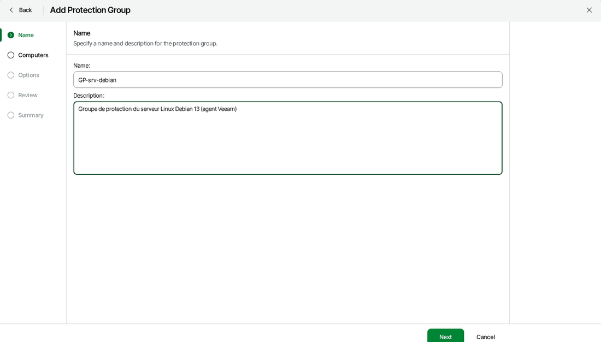
2.2 Ajouter le serveur et enregistrer les identifiants SSH¶
- Sur l'étape Computers, cliquer sur Add, saisir l'adresse
192.168.19.170dans Hostname or IP address. - Sous Connect using admin credentials, ouvrir le menu Add à côté de la liste des comptes : il propose cinq façons de se connecter. Choisir Stored SSH credentials (identifiants SSH enregistrés).
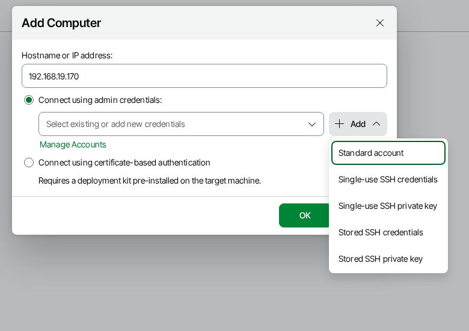
Pourquoi « Stored » plutôt que « Single-use » ?
Single-use (« à usage unique ») sert à ouvrir une session SSH le temps du déploiement, puis oublie le mot de passe. Stored le range dans la base de l'appliance : Veeam peut alors mettre à jour l'agent ou réanalyser la machine plus tard sans qu'on le ressaisisse. En production, on préfère une clé SSH (Stored SSH private key) à un mot de passe.
-
Renseigner la boîte Credentials :
Champ Valeur Username userPassword Popopo333@@@SSH Port 22Elevate account privileges automatically cochée Description Compte user (sudo) de srv-debian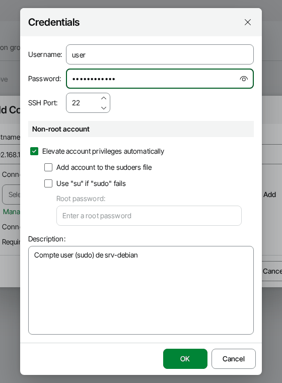
Identifiants SSH enregistrés. La case « Elevate… » est indispensable : voir ci-dessous. -
Cliquer sur OK. Le compte apparaît sélectionné ; cliquer à nouveau sur OK pour ajouter l'ordinateur.
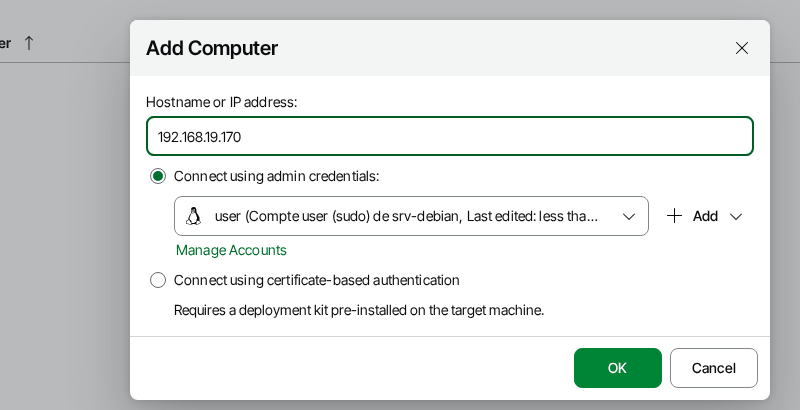
Pourquoi cocher « Elevate account privileges automatically » ?
Sur Debian, la connexion root par SSH est désactivée et root n'a pas de mot de passe. Le compte user n'est pas administrateur par lui-même : il le devient avec sudo. Cette case demande à Veeam d'exécuter ses commandes d'installation avec sudo, en réutilisant le mot de passe de user. Sans elle, le déploiement échouerait faute de droits. Les cases « Add account to the sudoers file » et « Root password » restent grisées : elles servent aux comptes qui ne sont pas encore dans sudo.
2.3 Options de déploiement¶
Les étapes suivantes règlent quand et comment l'agent est installé. Garder les valeurs proposées :
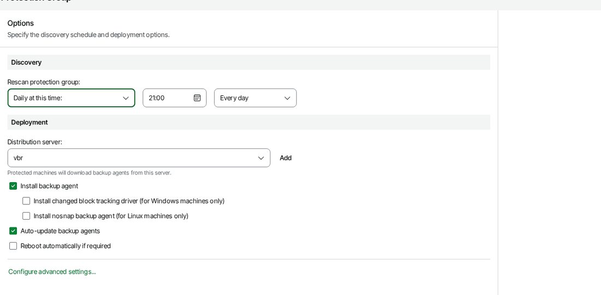
| Réglage | Valeur du lab | Explication |
|---|---|---|
| Rescan protection group | Tous les jours à 21:00 | Veeam réinterroge le groupe pour voir les machines ajoutées ou disparues |
| Distribution server | vbr |
L'appliance elle-même fournit l'agent et le déploie |
| Install backup agent | Cochée | Installe l'agent sur les machines du groupe |
| Install nosnap backup agent (Linux only) | Décochée | Variante de l'agent sans module noyau, qui ne fait que des sauvegardes de fichiers : inutile ici |
| Auto-update backup agents | Cochée | L'agent suit les mises à jour du serveur Veeam |
| Reboot automatically if required | Décochée | On évite qu'un redémarrage imprévu coupe un serveur en production |
Cliquer sur Next : l'étape Review annonce le composant à utiliser (Veeam Distribution Service, état Already exists, c'est-à-dire déjà présent sur l'appliance). Cliquer à nouveau sur Next.
Pas de domaine ni de certificat dans ce lab
L'assistant propose aussi l'authentification par certificat (Connect using certificate-based authentication). Elle suppose qu'un agent est déjà installé sur la machine : ce n'est pas le cas ici.
2.4 Résumé et premier déploiement¶
L'étape Summary récapitule le groupe. Laisser cochée Run discovery when I click Finish, puis cliquer sur Finish.
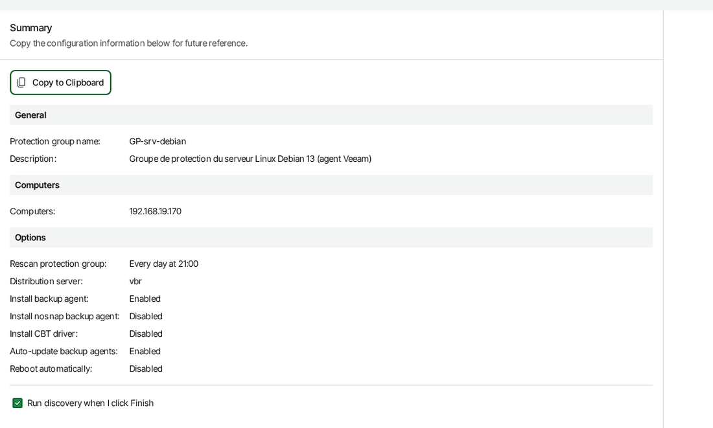
Une fenêtre Machine Rescan s'ouvre : Veeam se connecte en SSH, installe l'agent, puis inventorie la machine. L'opération a duré 3 min 19 s dans le lab. Attendre que le statut devienne Success, puis cliquer sur Close.
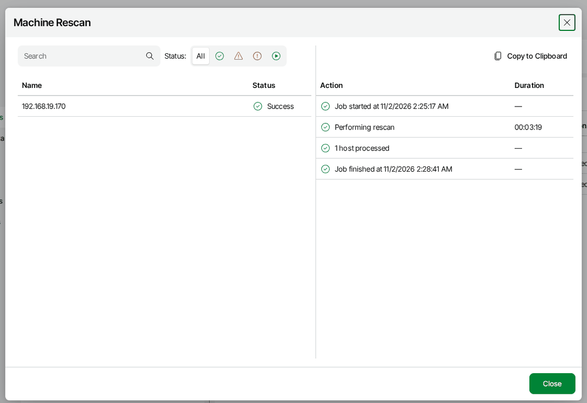
2.5 Ce que l'agent a installé¶
Sur 🐧 srv-debian, on peut constater ce que le déploiement a ajouté :
$ dpkg -l | grep -iE "veeam|fuse|blksnap" | awk '{print $1,$2,$3}'
ii blksnap 13.1.2.11
ii libfuse2t64:amd64 2.9.9-9
ii libfuse3-4:amd64 3.17.2-3
ii veeam 13.1.2.11
ii veeam-libs 13.1.2.11
ii veeamdeployment 13.1.2.57
ii veeamtransport 13.1.2.57
$ systemctl is-active veeamservice
active
| Élément | Rôle |
|---|---|
veeam, veeam-libs |
L'agent proprement dit, version 13.1.2.11 |
veeamdeployment, veeamtransport |
Le déployeur et le transport de données (Data Mover) pilotés par l'appliance, version 13.1.2.57 |
blksnap |
Le code source du module noyau de capture d'instantanés, compilé sur place par DKMS |
libfuse2t64 |
La bibliothèque FUSE, utilisée pour monter une sauvegarde et en extraire des fichiers |
Le journal d'installation de Debian montre aussi que l'agent a fait installer, par apt, tout le nécessaire à la compilation : les en-têtes du noyau (linux-headers-6.12.113+deb13-amd64), dkms, build-essential (compilateur gcc, make…), lvm2 et libfuse2t64.
libfuse s'installe seule sur Debian 13
C'est bien l'agent qui installe libfuse2t64 (paquet de la bibliothèque FUSE 2) pendant le déploiement : aucune commande manuelle. libfuse3-4 était déjà présent. Le problème de libfuse décrit en partie 7 concerne une machine qui n'avait pas accès aux dépôts de paquets au moment du déploiement. Deux conséquences : srv-debian doit sortir sur Internet pendant l'installation, et le déploiement est plus long qu'on l'imagine (plusieurs dizaines de paquets).
3. Créer le job de sauvegarde « machine entière »¶
- 🌐 Ouvrir Home > Jobs, cliquer sur New Job et choisir Linux Computer.
- La boîte New Agent Backup Job demande qui gère la sauvegarde. Choisir Server job.
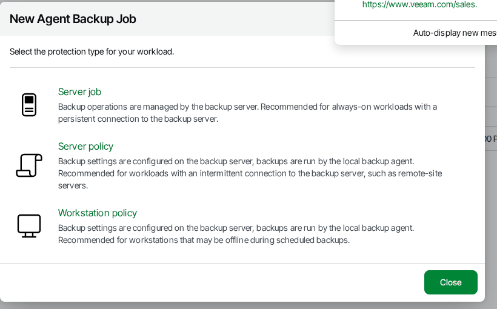
Server job, server policy ou workstation policy ?
- Server job : c'est l'appliance qui lance la sauvegarde et en réclame le résultat. Adapté à un serveur toujours allumé, comme
srv-debian. - Server policy : la configuration est donnée par l'appliance, mais l'agent sauvegarde seul selon le planning. Pour des serveurs distants ou des liaisons intermittentes.
- Workstation policy : l'agent sauvegarde quand le poste est disponible (portable, PC éteint la nuit).
- Saisir le nom
Sauvegarde-srv-debian-machine-entiereet la descriptionSauvegarde complète (machine entière) du serveur Debian 13 srv-debian. Laisser High priority décochée. Next.
3.1 Choisir ce qu'on sauvegarde¶
- Sur l'étape Workloads, cliquer sur Add, dérouler la liste : on choisit le groupe de protection et non la machine isolée. Cocher
GP-srv-debian, puis Add.
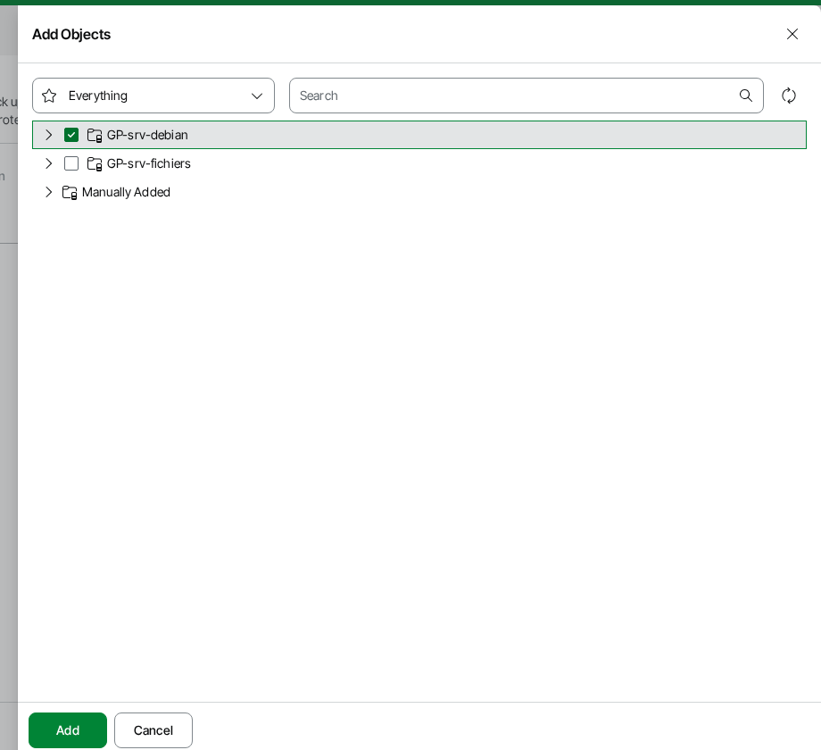
- Next. À l'étape Backup Mode, garder le premier choix, Entire machine backup.
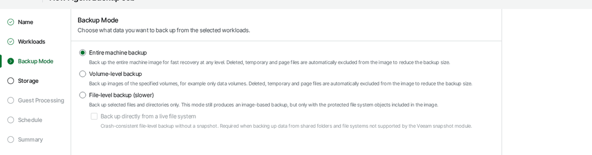
| Mode | Contenu | Restauration à nu ? |
|---|---|---|
| Entire machine backup | Tous les volumes de la machine (hors fichiers temporaires et d'échange) | Oui |
| Volume-level backup | Seulement les volumes cochés | Non : on ne retrouve pas le système entier |
| File-level backup (slower) | Fichiers et dossiers choisis, sans instantané du disque | Non |
3.2 Stockage, traitement, planification¶
- Étape Storage : le dépôt proposé est
Default Backup Repository (Created by Veeam Backup), la rétention 7 jours. Garder ces valeurs.
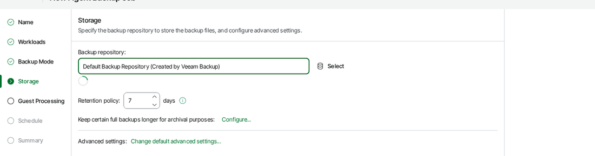
Que signifie « 7 jours » de rétention ?
Veeam garde les points de restauration des 7 derniers jours, puis supprime les plus anciens. Elle s'accorde avec l'immuabilité de 7 jours du dépôt : un point récent ne peut pas être effacé avant d'avoir eu 7 jours.
- Étape Guest Processing : laisser les deux interrupteurs désactivés. Ils servent à l'analyse d'applications (bases de données) et à l'indexation des fichiers, inutiles pour un Debian vierge.
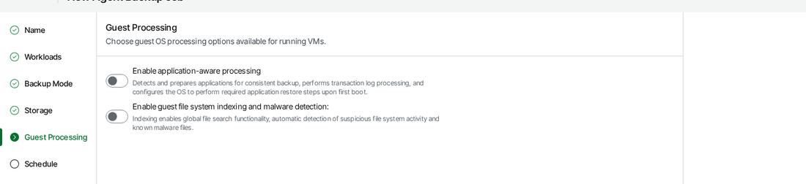
- Étape Schedule : laisser Run job on schedule activé, Daily at this time 22:00, Every day, et les nouvelles tentatives automatiques (3 tentatives à 10 minutes d'intervalle).
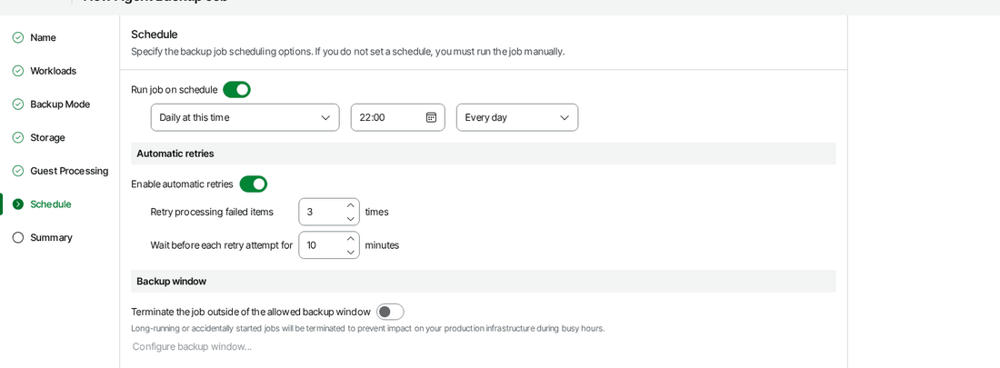
- Next : l'étape Summary récapitule le job (nom, dépôt
/var/lib/veeam/backup, type Agent backup job, mode Entire machine backup, portéeGP-srv-debian (Agent)). Cocher Run the job after I click Finish, puis Finish.
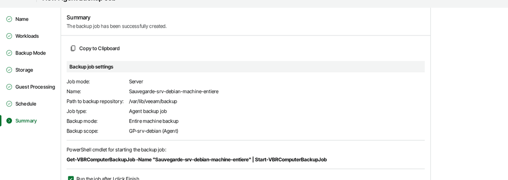
Le job démarre. Il arrive que le premier essai échoue, comme ici.
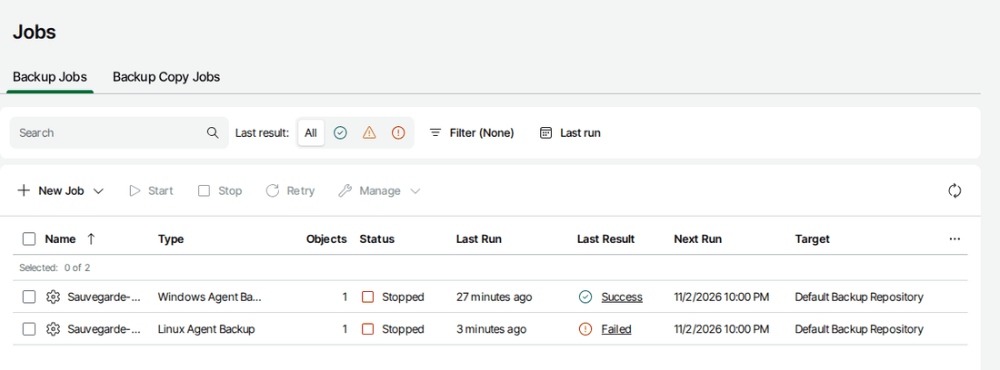
4. Dépanner deux erreurs courantes¶
Cette section sert à toute personne dont le premier job échoue. Si le vôtre a réussi du premier coup (cas de srv-debian créé sans Secure Boot, comme recommandé en partie 3), passer directement à la section 5.
4.1 Comment trouver la cause¶
- 🌐 Dans Jobs, cliquer sur le résultat Failed : la fenêtre de session indique Processing srv-debian en échec, mais pas pourquoi.
-
🐧 Sur
srv-debian, lire le journal du job (il y en a un par session) :
Deux messages importants peuvent y apparaître.
4.2 Erreur n° 1 : Secure Boot refuse le module noyau¶
Message d'erreur
et, en essayant de charger le module à la main :
Pourquoi Secure Boot refuse-t-il le module ?
Secure Boot (démarrage sécurisé) est une fonction du firmware UEFI : le démarrage ne laisse passer que du code signé par une clé de confiance (celle de Microsoft, de la distribution…). Lorsqu'il est actif, Linux passe en mode lockdown (« verrouillé ») et refuse de charger un module noyau non signé par une clé connue, pour qu'un logiciel malveillant ne puisse pas se glisser dans le noyau.
Or le module blksnap n'est pas livré compilé : DKMS le compile sur la machine et le signe avec une clé générée localement (/var/lib/dkms/mok.pub, la Machine Owner Key, MOK). Tant que le firmware ne connaît pas cette clé, il répond « Key was rejected by service ». Ce n'est ni un bogue de Veeam ni un module défectueux : c'est la protection qui fonctionne.
Vérification : dkms status indique que le module est bien installed, et modinfo veeamblksnap le trouve dans /lib/modules/…/updates/dkms/.
Deux solutions existent.
Solution A (la plus simple pour un lab) : désactiver Secure Boot¶
C'est la plus simple pour un lab. Éteindre la VM, puis :
- Clic droit sur la VM > Settings > onglet Options > Advanced.
- Dans Firmware type, laisser UEFI et décocher Enable secure boot.
- OK, puis rallumer la VM.
VirtualBox démarre en BIOS (sans EFI) par défaut pour Debian : si c'est votre cas, Secure Boot n'existe pas et l'erreur ne peut pas venir de lui.
Si vous avez coché Enable EFI (special OSes only) dans Settings > System > Motherboard, VirtualBox 7 propose aussi une option Secure Boot sur cette page : la décocher. Ne pas décocher EFI pour autant si Debian y a été installée : elle ne redémarrerait plus.
Une VM OVMF (UEFI) est créée avec un disque EFI qui, par défaut, contient des clés Secure Boot pré-inscrites (case Pre-Enroll keys) : Secure Boot est donc actif.
- Démarrer la VM et appuyer sur Échap dès l'écran du logo pour entrer dans le menu du firmware.
- Device Manager > Secure Boot Configuration, décocher Attempt Secure Boot, puis enregistrer et redémarrer.
Autre solution : supprimer le disque EFI et le recréer sans Pre-Enroll keys (Debian se relance alors depuis l'entrée de secours du disque).
Les libellés peuvent varier légèrement selon la version de l'hyperviseur.
Vérification, une fois la VM redémarrée :
$ mokutil --sb-state
This system doesn't support Secure Boot
$ sudo modprobe veeamblksnap && lsmod | grep -i blksnap
veeamblksnap 155648 0
bdevfilter 94208 1 veeamblksnap
Avec KVM/libvirt et le réglage ci-dessus, le message est « This system doesn't support Secure Boot » parce que le firmware choisi n'a pas de Secure Boot du tout ; avec un firmware qui le propose mais désactivé (VMware, par exemple), on lit plutôt SecureBoot disabled. L'important est que modprobe réussisse et que veeamblksnap apparaisse dans lsmod.
Désactiver Secure Boot n'est pas innocent
Sur un serveur de production, Secure Boot protège le démarrage. La bonne pratique est de garder Secure Boot et d'inscrire la clé du module, voir la solution B. Désactiver est acceptable pour un lab.
Solution B (recommandée en production) : inscrire la clé MOK de DKMS¶
C'est la procédure que décrivent la documentation Veeam et le wiki Debian : demander au firmware de faire confiance à la clé qui signe le module. Sur Debian 12 et suivantes, la clé générée par DKMS doit être importée à la main.
-
🐧 Demander l'inscription de la clé et choisir un mot de passe temporaire (il ne sert qu'une fois, au prochain démarrage), puis vérifier que la demande est bien en attente :
$ sudo mokutil --import /var/lib/dkms/mok.pub input password: input password again: $ sudo mokutil --list-newmokutil --list-new(oumokutil -N) affiche la clé en attente d'inscription. -
Redémarrer la machine :
sudo systemctl reboot. - Avant Debian, un écran bleu s'affiche : c'est le gestionnaire de clés MokManager, avec un compte à rebours d'une dizaine de secondes. Appuyer sur une touche avant la fin.
- Dans MokManager, enchaîner les écrans :
- Enroll MOK (inscrire la clé), puis Entrée ;
- Continue (on peut d'abord choisir View key 0 pour afficher la clé) ;
- à la question Enroll the key(s)?, choisir Yes ;
- saisir le mot de passe temporaire de l'étape 1 ;
- choisir Reboot.
-
Debian redémarre. Vérifier que la clé est inscrite, puis que le module se charge :
-
🌐 Relancer le job (Retry, voir la section 4.4).
Deux pièges dans MokManager
- Ne pas laisser passer le compte à rebours : sans appui sur une touche, la machine démarre normalement sans inscrire la clé. Il faut alors refaire l'étape 1 (
mokutil --import) et redémarrer. - Choisir Enroll MOK, pas Continue boot : Continue boot est l'option sélectionnée au départ ; la valider poursuit le démarrage sans rien inscrire. Si
mokutil --test-keyrépondis not enrolled, c'est ce qui s'est passé : refaire l'étape 1.
MokManager fonctionne avant Debian, avec le clavier du firmware, généralement en QWERTY : choisir un mot de passe temporaire simple, fait de lettres qui ne changent pas de place entre AZERTY et QWERTY (éviter a, q, z, w, m, les chiffres et les symboles).
4.3 Erreur n° 2 : le nom vbr ne se résout pas¶
Message d'erreur (journal du job sur srv-debian)
Pourquoi l'agent cherche-t-il vbr ? L'appliance s'annonce à ses clients par son nom d'hôte (vbr), et non par son adresse IP. Quand l'agent doit joindre le serveur Veeam (port TCP 10006), il cherche donc vbr. Or srv-debian ne connaît que l'adresse du résolveur DNS de pfSense, et pfSense ne connaît pas vbr : la résolution échoue. Le journal classe ce message en WARN (avertissement) et pas en ERR, mais il ne faut pas le négliger : une machine qui ne trouve pas son serveur de sauvegarde ne peut pas communiquer avec lui. Corriger le nom en même temps que Secure Boot, avant de relancer le job.
Deux façons de le corriger :
🐧 Sur srv-debian, ajouter une ligne d'association nom-adresse :
Simple et immédiat, mais à refaire sur chaque machine protégée.
Déclarer vbr une fois, dans le DNS qui sert tous les clients du LAN. C'est la bonne pratique en production.
- Dans pfSense : Services > DNS Resolver, section Host Overrides, bouton Add.
- Renseigner Host
vbr, Domain le domaine du lab (champ obligatoire), IP Address192.168.19.55et une Description (Appliance Veeam). - Save, puis Apply Changes.
Toutes les machines qui utilisent pfSense comme DNS (dont celles ajoutées plus tard) résolvent alors vbr.<domaine>. Pour que le nom court vbr suffise, ce domaine doit être le domaine de recherche du client (ligne search de /etc/resolv.conf). Vérifier depuis srv-debian avec getent hosts vbr.
4.4 Relancer le job¶
Une fois les deux corrections faites :
- 🌐 Dans Jobs, cocher le job
Sauvegarde-srv-debian-machine-entiere. - Cliquer sur Retry (« réessayer » : relance uniquement les machines en échec).
5. Vérifier la sauvegarde, puis prendre l'instantané¶
5.1 Lire le résultat¶
Le second essai dure environ 3 minutes dans ce lab, et le statut passe à Success.
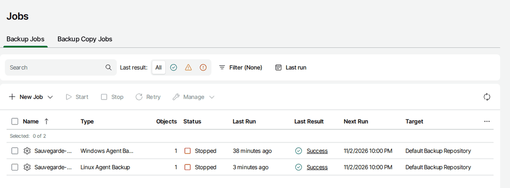
5.2 Relever les « preuves avant panne »¶
Pour pouvoir comparer après la restauration, relever ces valeurs sur 🐧 srv-debian et les noter :
$ hostname
srv-debian
$ grep vbr /etc/hosts
192.168.19.55 vbr
$ dpkg -l | grep -c ^ii
397
$ ssh-keygen -lf /etc/ssh/ssh_host_ed25519_key.pub
256 SHA256:5Im5cNqiO6PCyJKPME/rSa5XR3MQf3V4RnvRUa4D69c root@srv-debian (ED25519)
Pourquoi la clé d'hôte SSH ?
La clé d'hôte SSH est générée une seule fois, à l'installation de la machine, et ne change jamais. Si, après la restauration, elle est identique, c'est la preuve que ce n'est pas une nouvelle installation mais bien le même disque retrouvé. C'est aussi ce qui évite l'alerte « REMOTE HOST IDENTIFICATION HAS CHANGED » chez les clients SSH. Votre valeur sera différente de celle du lab : ne comparer que les vôtres.
5.3 🛟 Instantané 04-avant-panne¶
- 🐧 Éteindre proprement
srv-debian:sudo systemctl poweroff. - 🖥️ Prendre l'instantané
04-avant-pannedesrv-debian(et, de préférence, de toutes les machines du lab : voir les instantanés conseillés).
Pourquoi ce point de retour ?
La suite détruit volontairement le disque de srv-debian. Avec cet instantané, vous pourrez refaire toute la restauration autant de fois que nécessaire, en revenant ici. Ce n'est pas la sauvegarde elle-même (voir l'avertissement de la page d'accueil du parcours) : la vraie sauvegarde est sur l'appliance.
6. Simuler la panne : remplacer le disque système¶
Éteindre la VM srv-debian (déjà fait), puis remplacer son disque système par un disque vierge de même taille ou plus grand (20 Go ici).
- Settings > Hard Disk (NVMe/SCSI) > Remove pour détacher le disque (ne pas supprimer le fichier : il resservira).
- Add > Hard Disk > Create a new virtual disk, 20 Go, même type de contrôleur.
- Settings > Storage : sélectionner le disque dur du contrôleur, cliquer sur Remove Attachment (ne pas supprimer le fichier).
- Cliquer sur Adds hard disk > Create, VDI, 20 Go.
- Hardware : sélectionner le disque, Detach (il apparaît en Unused Disk).
- Add > Hard Disk, même bus, 20 GiB.
Disque de même taille ou plus grand
Le support de récupération recrée les partitions telles qu'elles étaient ; il lui faut au moins autant d'espace que la machine d'origine. Une taille inférieure peut bloquer la restauration.
Démarrer ensuite la VM : elle ne démarre plus. Il n'y a plus de système sur le disque : selon l'hyperviseur, on obtient un écran de firmware (No bootable device, Boot failed, un shell UEFI…). C'est exactement le scénario d'une panne de disque dans un vrai serveur. Éteindre la VM avant de continuer.
7. Télécharger et attacher l'ISO de récupération¶
7.1 Télécharger l'ISO (sans compte)¶
Le support de récupération est une ISO amorçable : un petit système Debian 13 qui sait parler à Veeam. Elle se télécharge sans compte Veeam : Veeam publie ces ISO dans un dépôt public.
-
🖥️ Le dépôt est à l'adresse https://repository.veeam.com/backup/linux/agent/veeam-recovery-media/x64/. Vérifier qu'il répond, puis télécharger :
$ curl -sIL https://repository.veeam.com/backup/linux/agent/veeam-recovery-media/x64/veeam-recovery-amd64-13.0.0.iso | grep -iE '^HTTP|content-length|last-modified' HTTP/1.1 200 OK Content-Length: 762314752 Last-Modified: Tue, 27 Oct 2026 16:17:55 GMT $ curl -L -O https://repository.veeam.com/backup/linux/agent/veeam-recovery-media/x64/veeam-recovery-amd64-13.0.0.iso -
Vérifier le fichier :
$ ls -l veeam-recovery-amd64-13.0.0.iso -rw-rw-r-- 1 user user 762314752 ... veeam-recovery-amd64-13.0.0.iso $ sha256sum veeam-recovery-amd64-13.0.0.iso b866ce121b2d5d30ecba84cf640bc2e00112e4e9467594a2993f502427912724 veeam-recovery-amd64-13.0.0.iso $ file veeam-recovery-amd64-13.0.0.iso veeam-recovery-amd64-13.0.0.iso: ISO 9660 CD-ROM filesystem data (DOS/MBR boot sector) 'veeam-recovery-iso-13.1.2.11' (bootable)
Un nom de fichier qui ment : « 13.0.0 » contient la version 13.1.2.11
Ce qui est sûr : le dépôt n'offre qu'un seul fichier pour la série 13, nommé veeam-recovery-amd64-13.0.0.iso ; il pèse 762 314 752 octets et son étiquette de volume (celle que lit la commande file) est veeam-recovery-iso-13.1.2.11. L'ISO est donc assortie à l'agent 13.1.2.11 installé en section 2 : c'est cette version qu'il faut retenir.
Le nom du fichier ne donne donc pas la version exacte : ne pas vous y fier. Renommer la copie en veeam-recovery-amd64-13.1.2.11.iso évite toute confusion. Le SHA-256 ci-dessus est celui de l'ISO du lab ; si Veeam la republie, il changera, et seule la comparaison avec le fichier du dépôt public a un sens.
Veeam documente aussi ces ISO
La page Veeam Recovery Media explique le contenu du support de récupération et la page Veeam Recovery Media Versions liste les versions publiées.
7.2 Attacher l'ISO et démarrer dessus¶
- 🖥️ Insérer l'ISO dans le lecteur CD/DVD virtuel de
srv-debian(le lecteur doit exister dans la VM ; l'ajouter sinon). -
Placer le lecteur CD/DVD en premier dans l'ordre de démarrage, avant le disque (vide : le firmware passerait de toute façon à l'ISO, mais autant ne pas dépendre de cela).
- VMware : VM > Power > Power On to Firmware, puis menu Boot, ou CD-ROM déplacé en tête dans Settings > Options > Boot Options ;
- VirtualBox : Settings > System > Motherboard > Boot Order, cocher Optical et le monter en tête ;
- Proxmox VE : Options > Boot Order, activer ide2 (le lecteur CD) et le glisser en premier ;
- KVM/libvirt :
<boot order='1'/>sur le CD-ROM,<boot order='2'/>sur le disque.
-
Démarrer la VM. Le menu GRUB de l'ISO propose deux entrées, une par noyau Linux embarqué : Veeam recovery 6.12.100+deb13-amd64 (le noyau standard de Debian 13) et Veeam recovery 7.1.3+deb13-amd64 (un noyau plus récent, à essayer si un disque ou une carte réseau n'est pas reconnu avec le premier). Laisser la première, le démarrage se fait seul au bout de quelques secondes.
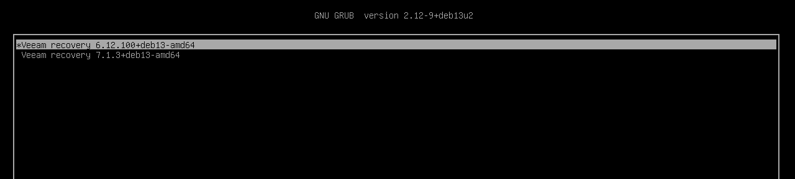
8. Restaurer le serveur avec le support de récupération¶
Le support de récupération est en mode texte : on navigue avec le clavier. Les flèches déplacent la sélection, Entrée valide, Tab passe à l'élément suivant, Échap revient en arrière.
Clavier : deux pièges possibles
- Disposition QWERTY : le clavier du support de récupération peut être en QWERTY (disposition américaine). Avant de valider un mot de passe, une adresse ou un jeton, lire à l'écran ce qui s'est écrit : sur un clavier AZERTY,
a,q,z,w,m, les chiffres,-ou:peuvent sortir autrement. - Clavier qui ne répond pas : il arrive que le support de récupération ignore le clavier virtuel PS/2 de la VM (cas rencontré sous KVM). Ajouter un clavier USB à la VM (ou un contrôleur USB) règle le problème.
8.1 Identifiants SSH temporaires et licence¶
Après quelques dizaines de secondes, une fenêtre SSH Connection Info s'affiche. C'est une nouveauté de la version 13 : le support de récupération ouvre un accès SSH temporaire (nom d'utilisateur veeamuser, mot de passe aléatoire propre à ce démarrage) pour pouvoir le piloter à distance. On n'en a pas besoin ici. Sans serveur DHCP sur le réseau, ce qui est le cas de ce lab, aucune adresse IPv4 n'apparaît : seule une adresse IPv6 locale s'affiche, ce qui est normal.
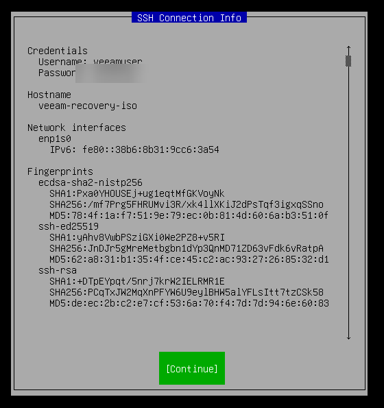
- Valider [Continue].
- L'écran Accept license agreement s'affiche directement, sans commande à taper (pas de
sudo veeamavec la version 13). Il faut cocher les deux cases (contrat de licence Veeam et composants tiers) : Espace coche la case sélectionnée, Tab passe à la case suivante puis aux boutons. Puis [Continue].
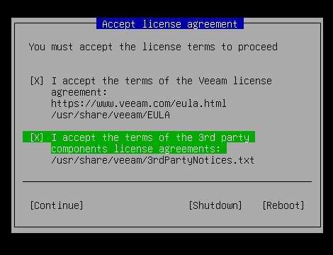
Le menu principal s'affiche :
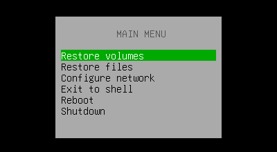
| Entrée | Rôle |
|---|---|
| Restore volumes | Restaurer des volumes entiers (c'est le cas d'une panne totale) |
| Restore files | Récupérer seulement quelques fichiers |
| Configure network | Régler le réseau |
| Exit to shell | Ouvrir un terminal de dépannage |
| Reboot / Shutdown | Redémarrer / éteindre |
8.2 Configurer le réseau avec nmtui¶
Le support démarre sans réseau utilisable : il faut lui redonner l'adresse d'origine du serveur pour qu'il joigne l'appliance.
Pourquoi l'adresse d'origine 192.168.19.170 ?
On pourrait utiliser une autre adresse libre du LAN. Reprendre l'ancienne adresse évite d'oublier un réglage (baux DHCP, règles de pare-feu, entrées DNS) qui désignait ce serveur, et c'est ce qu'il aura de toute façon une fois restauré.
- Choisir Configure network. L'outil texte
nmtui(NetworkManager Text User Interface) s'ouvre ; choisir Edit a connection, puis Wired connection 1, Edit…. - Placer le curseur sur IPv4 CONFIGURATION
<Automatic>, ouvrir la liste et choisir Manual, puis<Show>pour déplier les champs.
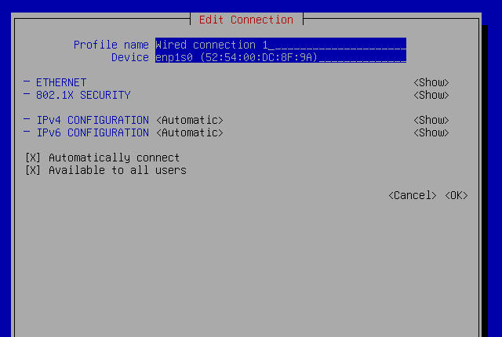
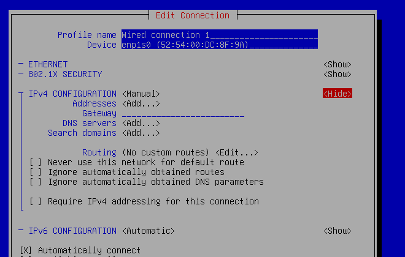
-
Renseigner :
Champ Valeur Addresses 192.168.19.170/24Gateway 192.168.19.21DNS servers 192.168.19.21Pour saisir une valeur dans une ligne
<Add...>, appuyer sur Entrée, taper, puis Tab.
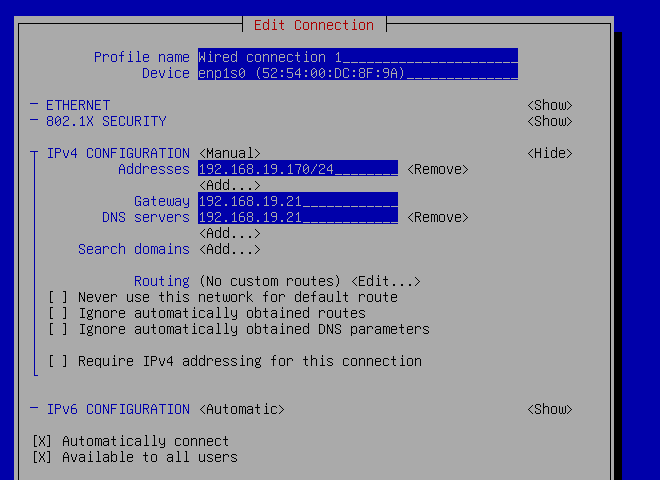
- Descendre jusqu'à
<OK>(en bas, Tab plusieurs fois) et valider. Appuyer ensuite sur Échap autant de fois que nécessaire pour quitternmtuiet retrouver le menu principal. - Vérifier depuis 🖥️ le PC hôte :
ping 192.168.19.170doit répondre, normalement dès la validation de OK.
8.3 Créer le jeton de récupération¶
Le support de récupération doit se connecter à l'appliance pour lire la sauvegarde. Au lieu de lui confier le mot de passe de veeamadmin, on lui donne un jeton de récupération (recovery token) : un accès limité dans le temps (24 heures) et limité aux sauvegardes pour lesquelles il a été généré (ici, une seule). Selon la documentation Veeam, il évite justement de partager les identifiants du serveur de sauvegarde pendant une restauration à nu.
- 🌐 Dans l'interface web, ouvrir Home > Backups.
- Sélectionner la ligne
Sauvegarde-srv-debian-machine-entiere(case à cocher). - Cliquer sur Create Recovery Token dans la barre d'outils, puis sur Create.
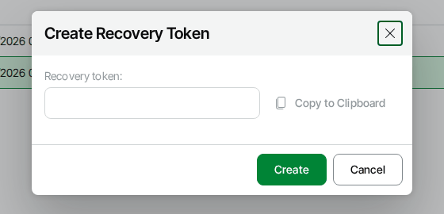
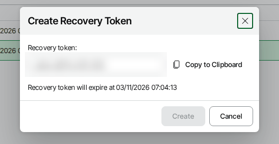
- Noter le jeton (Copy to Clipboard) : on le recopie à la main dans le support de récupération (pas de copier-coller possible dans une VM en mode texte). Il se compose de quatre groupes de quatre caractères séparés par des tirets, sur le modèle
XXXX-XXXX-XXXX-XXXX, et mélange chiffres, majuscules et minuscules : recopier chaque caractère en respectant la casse, et se méfier des confusions0/Oet1/l/I.
Pourquoi un jeton plutôt que le compte veeamadmin ?
Le support de récupération tourne sur une machine en panne, parfois sur un réseau douteux, dans un système dont on ne maîtrise pas le contenu. Y saisir le compte administrateur de toute la plateforme de sauvegarde serait un risque : quiconque lirait l'écran ou le clavier pourrait tout supprimer. Le jeton, lui, expire seul au bout de 24 h et ne donne accès qu'à la sauvegarde pour laquelle il a été créé : même volé, il n'ouvre ni la console ni les autres sauvegardes. C'est le principe du moindre privilège. Veeam précise que, avec un jeton, on ne voit pas toutes les sauvegardes du dépôt : pour cela, il faut l'authentification par mot de passe. Le formulaire propose aussi Login and password, qui reste possible mais à éviter.
8.4 Se connecter à l'appliance¶
- 💿 Dans le menu principal, choisir Restore volumes. L'écran Select backup location propose cinq emplacements. Choisir Add Veeam backup repository… (troisième descente depuis Mount local disk…).
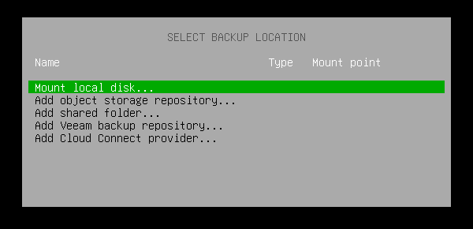
- Dans Connect to a backup server, saisir l'adresse
192.168.19.55, laisser le port10006, choisir Recovery token (touche Espace sur le bouton radio), puis taper le jeton et valider avec [Next].
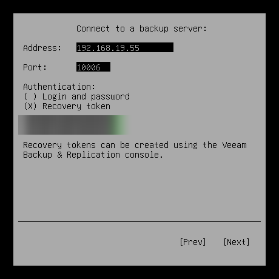
- Une fenêtre Certificate details montre le certificat de l'appliance : Self-signed certificate, émetteur et sujet
/CN=vbr, et son empreinte SHA-256. Comparer l'empreinte avec celle de l'appliance (dans le lab :A263ED1B…E552, identique à ce que montre l'écran devbr), puis choisir [Accept].
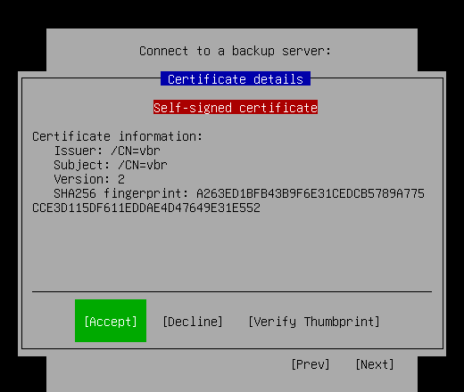
Pourquoi comparer l'empreinte du certificat ?
Le certificat de l'appliance est auto-signé : aucune autorité extérieure ne garantit qu'il appartient bien à 192.168.19.55. Sans comparaison, un intrus placé sur le réseau pourrait se faire passer pour l'appliance et capter le jeton. L'empreinte (thumbprint) est la carte d'identité du certificat : si elle est identique des deux côtés, c'est bien le bon serveur. Le bouton [Verify Thumbprint] permet de saisir l'empreinte attendue.
8.5 Choisir la sauvegarde et le point de restauration¶
La sauvegarde de srv-debian apparaît, avec le nom du job, le nom d'hôte srv-debian, 1 point et l'heure du point de restauration (affichée en UTC : 01:47 correspond à 02:47 en heure locale du lab).
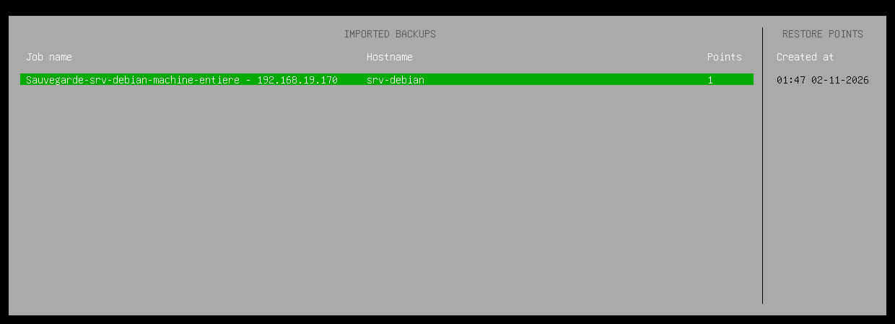
- Appuyer sur Entrée pour sélectionner la sauvegarde, puis sur Entrée à nouveau pour choisir le point (colonne de droite).
8.6 Faire correspondre les disques¶
L'écran suivant compare à gauche le système actuel (Current system) et à droite le contenu de la sauvegarde (In backup).
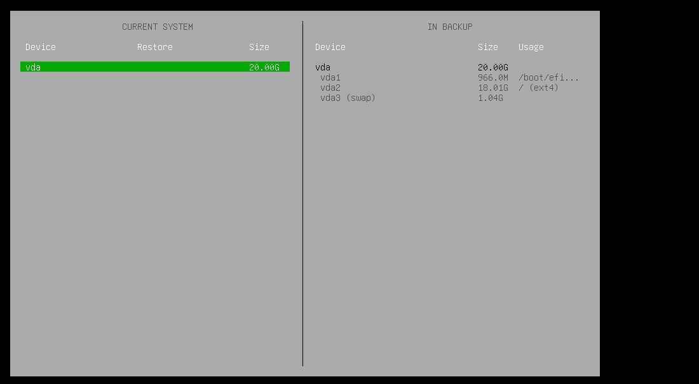
| Partition sauvegardée | Taille | Contenu |
|---|---|---|
vda1 |
966 Mo | Partition de démarrage EFI (/boot/efi, vfat) |
vda2 |
18,01 Go | Système (/, ext4) |
vda3 |
1,04 Go | Espace d'échange (swap) |
- Appuyer sur Tab pour passer à la colonne de droite et sélectionner le disque de la sauvegarde (
vda), puis sur Entrée. - Dans le petit menu, choisir Restore to… (l'autre entrée, Close, ferme le menu).
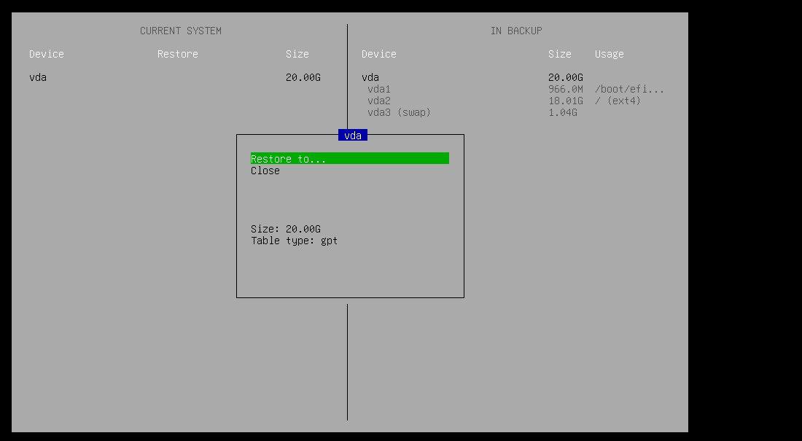
- Choisir le disque cible (
vda, 20 Go : le disque vierge) puis Entrée. Le tableau de gauche se remplit : la colonne Restore associe maintenant chaque partition au disque vierge.
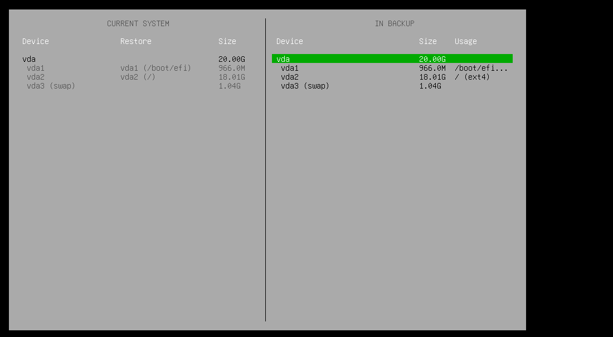
Le disque cible est effacé
La restauration réécrit la table de partitions et les systèmes de fichiers du disque cible : tout ce qu'il contient est perdu. Ici, c'est le disque vierge ; sur un vrai serveur, vérifier deux fois qu'il ne s'agit pas d'un disque de données.
8.7 Lancer la restauration¶
- En bas de l'écran, les raccourcis sont rappelés : S (Start Restore, démarrer la restauration), Z (annuler une correspondance). Appuyer sur S.
- Un résumé (Recovery summary) liste exactement ce qui va se passer : création de la table GPT et des trois partitions, restauration de
vda1(vfat) et devda2(ext4).
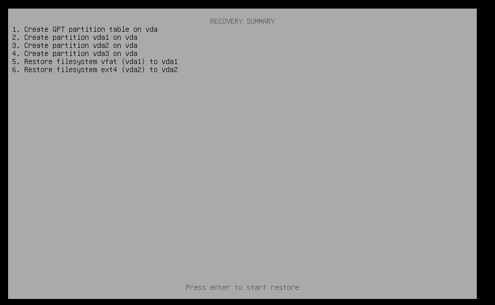
- Appuyer sur Entrée (Start Recovery). La barre de progression avance ; l'écran affiche en direct les actions, avec les volumes restaurés.
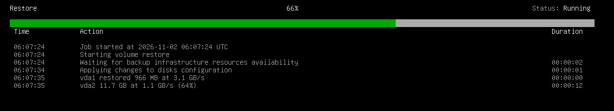
- À la fin, le statut passe à Success (100 %). Dans le lab, la restauration a duré environ 30 secondes. Le détail indique notamment
vda1 restored 966 MB,vda2 restored 18 GB,Restore EFI volume: /dev/vda1etRestore EFI boot manager entry: debian: l'entrée de démarrage UEFI est recréée.
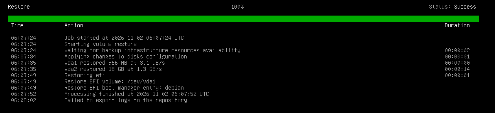
« Failed to export logs to the repository »
Une dernière ligne indique, après le succès, que le support n'a pas pu envoyer ses journaux de restauration vers le dépôt. C'est un avertissement sans conséquence : il concerne seulement la copie des journaux, pas les données. La restauration elle-même est terminée (Status: Success) et le serveur redémarre correctement, comme le montre la section suivante.
8.8 Redémarrer sans l'ISO¶
- Appuyer sur Échap pour revenir au menu principal, puis choisir Reboot (ou Shutdown, comme sur la capture).
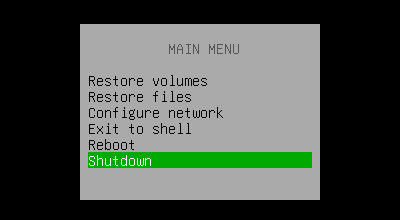
-
🖥️ Une fois la VM éteinte, retirer l'ISO du lecteur (ou le mettre en dernier dans l'ordre de démarrage) et, si on l'avait ajouté, supprimer le clavier USB temporaire.
Ne pas oublier de retirer l'ISO
Si l'ISO reste en tête de l'ordre de démarrage, la VM redémarre sur le support de récupération au lieu de Debian, et on croit à tort que la restauration a échoué.
-
Démarrer la VM : le menu GRUB de Debian s'affiche, le système démarre. Le disque contenait un système vierge quelques minutes plus tôt.
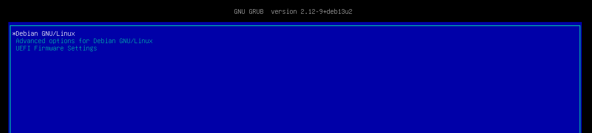
9. Vérifier la restauration¶
🐧 Une fois srv-debian démarré (attendre que SSH réponde), relancer les mêmes commandes qu'en section 5.2 et comparer.
$ hostname
srv-debian
$ grep vbr /etc/hosts
192.168.19.55 vbr
$ dpkg -l | grep -c ^ii
397
$ ssh-keygen -lf /etc/ssh/ssh_host_ed25519_key.pub
256 SHA256:5Im5cNqiO6PCyJKPME/rSa5XR3MQf3V4RnvRUa4D69c root@srv-debian (ED25519)
$ systemctl is-active veeamservice
active
$ lsblk -o NAME,SIZE,FSTYPE,MOUNTPOINTS
NAME SIZE FSTYPE MOUNTPOINTS
vda 20G
├─vda1 966M vfat /boot/efi
├─vda2 18G ext4 /
└─vda3 1G swap [SWAP]
| Contrôle | Attendu | Ce que cela prouve |
|---|---|---|
| Clé d'hôte SSH ED25519 | Identique à celle d'avant la panne | C'est bien le même système, pas une réinstallation |
Nombre de paquets (dpkg -l \| grep -c ^ii) |
Même nombre (397 dans le lab) | Tout le logiciel installé est revenu |
/etc/hosts |
Contient 192.168.19.55 vbr |
La configuration modifiée avant la sauvegarde a été restaurée |
veeamservice |
active |
L'agent Veeam a été restauré avec la machine et redémarre |
lsblk |
Trois partitions sur vda |
La disposition des disques est identique |
Critère de réussite du TP
Les cinq contrôles ci-dessus concordent avec les « preuves avant panne » relevées en section 5.2. Le serveur a été entièrement reconstruit sur un disque vierge à partir de la sauvegarde.
9.1 Refaire une sauvegarde¶
Un serveur restauré est dans l'état du dernier point, pas dans celui du moment de la panne : tout ce qui a été écrit depuis la dernière sauvegarde est perdu. C'est le sens du RPO (voir ci-dessous). Après toute restauration :
- 🌐 Dans Jobs, sélectionner
Sauvegarde-srv-debian-machine-entiereet cliquer sur Start pour lancer une sauvegarde tout de suite, sans attendre 22:00. - Vérifier qu'elle se termine en Success. Si le job signale un avertissement ou une erreur, lire le message dans la fenêtre de session et dans le journal de l'agent, comme en section 4.1.
🛟 Point d'instantané en fin de TP
- L'instantané
04-avant-panne(section 5.3) est votre point de départ pour refaire la panne et la restauration : y revenir, retirer le disque vierge restauré, replacer un nouveau disque vierge, et recommencer la section 6. - Il n'y a pas de nouvel instantané à prendre pour la partie 7.
- L'ISO peut être supprimée du PC hôte ; le jeton n'a pas besoin d'être supprimé : il expire de lui-même au bout de 24 h.
10. Questions de révision¶
- Pourquoi l'agent Veeam a-t-il besoin d'un module noyau, et pourquoi Secure Boot le refuse-t-il ?
- Quelles sont les deux façons de lever ce refus, et laquelle recommander en production ?
- Pourquoi l'agent cherche-t-il le nom
vbr? Quelle est la façon propre de le résoudre pour tout un réseau ? - Quelle différence entre un job « machine entière » et un job « volume » ou « fichiers » ?
- Pourquoi utiliser un jeton de récupération plutôt que le compte
veeamadmindans le support de récupération ? - Que se passerait-il si la sauvegarde était stockée dans un dépôt non immuable, et que l'appliance était piratée ?
- Quel est le RPO de ce job ? Que perd-on en cas de panne à 21 h 45 ?
- Pourquoi comparer l'empreinte du certificat de l'appliance au moment de la connexion ?
- Comment prouver, après la restauration, qu'il s'agit bien du même serveur ?
- Que se passe-t-il si on oublie de retirer l'ISO après la restauration ?
Corrigé
- Pour figer une image cohérente du disque pendant que le serveur travaille, l'agent charge un module noyau (
blksnap) compilé sur place par DKMS. Avec Secure Boot, le noyau n'accepte que des modules signés par une clé connue du firmware : la clé locale de DKMS (MOK) ne l'est pas, d'où « Key was rejected by service ». - Désactiver Secure Boot (simple, adapté au lab) ou inscrire la clé MOK de DKMS avec
mokutil --importpuis MokManager au redémarrage. En production, on recommande l'inscription de la clé, qui conserve la protection au démarrage. - L'appliance s'annonce à ses clients par son nom d'hôte ; l'agent doit pouvoir le résoudre pour la joindre sur le port 10006. Solution rapide : une ligne dans
/etc/hostsde chaque machine. Solution propre : un enregistrement DNS (pfSense : Services > DNS Resolver > Host Overrides) valable pour tout le réseau. - Machine entière : tous les volumes, y compris le démarrage, ce qui permet la restauration à nu. Volumes : seulement ceux que l'on coche. Fichiers : seulement des dossiers, sans instantané du disque ; impossible de reconstruire le serveur.
- Le support de récupération tourne sur une machine en panne. Un jeton expire au bout de 24 h et n'ouvre que la sauvegarde pour laquelle il a été créé, alors que
veeamadmindonne tous les droits sur la plateforme de sauvegarde. C'est le moindre privilège. - Sans immuabilité, une personne ou un rançongiciel qui obtient des droits sur l'appliance pourrait modifier ou supprimer les sauvegardes, et il n'y aurait plus rien à restaurer. Avec le dépôt par défaut immuable 7 jours, un fichier de sauvegarde ne peut pas être effacé avant 7 jours, même par un administrateur.
- Le job tourne une fois par jour, à 22:00 : le RPO (perte de données maximale acceptable) est d'environ 24 heures. Une panne à 21 h 45 fait perdre les données écrites depuis la sauvegarde de la veille à 22:00, soit presque 24 heures. Pour réduire le RPO, planifier le job plus souvent.
- Le certificat est auto-signé : seule l'empreinte garantit qu'on parle à la vraie appliance et pas à un serveur qui s'en ferait passer, ce qui lui ferait capter le jeton.
- La clé d'hôte SSH ED25519 (générée une seule fois à l'installation) est identique, le nombre de paquets est le même,
/etc/hostsa conservé la lignevbr, etveeamserviceest actif. - La VM redémarre sur le support de récupération au lieu de Debian et l'on croit à tort que la restauration a échoué : toujours retirer l'ISO (ou la mettre en dernier dans l'ordre de démarrage).
Ressources¶
- Veeam Recovery Media — le support de récupération Veeam pour Linux (documentation officielle, en anglais).
- Veeam Recovery Media Versions — versions des ISO publiées.
- Dépôt public des ISO de récupération — téléchargement sans compte.
- Créer un jeton de récupération — validité de 24 heures, portée du jeton, création depuis l'onglet Backups.
- Restauration de volumes avec le support de récupération — procédure officielle (Veeam Agent for Linux avec Veeam Backup & Replication).
- Configuring UEFI Secure Boot — inscription de la clé MOK du module noyau (DKMS ou pré-compilé).
- Exigences système de Veeam Agent for Linux — distributions prises en charge, paquets requis.
- Créer un groupe de protection d'ordinateurs individuels — documentation Veeam Backup & Replication.
- SecureBoot sur Debian — fonctionnement de Secure Boot, des modules DKMS et de la MOK.
- Page de manuel de
mokutil— gérer les clés du firmware depuis Linux. - Machines virtuelles Proxmox VE (OVMF et UEFI) — firmware et disque EFI.
- Partie précédente : Sauvegarder la configuration et le serveur de fichiers · Partie suivante : Sauvegarder vers Azure Blob Storage · Retour au sommaire du parcours.